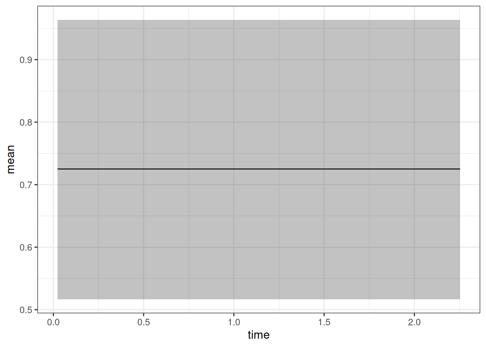

The purpose of this document is to show a minimal workflow for fitting a Weibull OS model using the jmpost package.
Setup and load data
First we need to load the necessary packages and set some default options for the MCMC sampling. We also set the theme for the plots to theme_bw with a base size of 12.
Show the code
library(bayesplot)library(brms)library(ggplot2)library(gt)library(here)library(janitor)library(jmpost)library(modelr)library(posterior)library(readxl)library(rstan)library(tidybayes)library(tidyverse)library(truncnorm)library(fuzzyjoin)library(sn)library(glue)if (require(cmdstanr)) {# If cmdstanr is available, instruct brms to use cmdstanr as backend# and cache all Stan binariesoptions(brms.backend ="cmdstanr",cmdstanr_write_stan_file_dir =here("_brms-cache") )dir.create(here("_brms-cache"), FALSE) # create cache directory if not yet available} else { rstan::rstan_options(auto_write =TRUE)}# MCMC optionsoptions(mc.cores =4)ITER <-1000# number of sampling iterations after warm upWARMUP <-2000# number of warm up iterationsCHAINS <-4BAYES.SEED <-878REFRESH <-500theme_set(theme_bw(base_size =12))
We also need a small function definition, which is still missing in brms:
id year sld
5394902984416364544 : 16 Min. :-0.1068 Min. : 2.00
7160320731596789760 : 16 1st Qu.: 0.1123 1st Qu.: 19.05
-4159496062492130816: 15 Median : 0.2519 Median : 32.00
-7900338178541499392: 15 Mean : 0.3995 Mean : 38.16
4878279915140903936 : 15 3rd Qu.: 0.5749 3rd Qu.: 51.00
9202154259772598272 : 15 Max. : 2.0753 Max. :228.00
(Other) :4034 NA's :27
arm
Docetaxel:1658
MPDL3280A:2468
Here we have 701 patients, and we know from Fig. 1 in the publication that this is the subset of patients with at least 3 tumor size measurements. We have guessed from the second Excel sheet with parameter estimates that arm 1 means docetaxel and arm 2 means MPDL3280A. This also seems reasonable given the larger number of measurements per patient:
Show the code
# make a tabletumor_data |>group_by(id) |>summarize(arm = arm[1], n =n()) |>group_by(arm) |>summarize(mean_n =mean(n))
# A tibble: 2 × 2
arm mean_n
<fct> <dbl>
1 Docetaxel 5.10
2 MPDL3280A 6.56
For the OS data, we will be using the Supplementary Table 8 from here. Again, we have copied the data set in this GitHub repository.
From the supplementary material, we know that:
PFS/OS: time in months
PFS.CNSR/OS.CNSR: 1 for censor, 0 for event
Therefore we will convert the time to years and the censoring to a logical variable:
# A tibble: 6 × 12
id arm ecog age race sex sld response pfs_time pfs_event os_time
<fct> <fct> <fct> <dbl> <fct> <fct> <dbl> <fct> <dbl> <lgl> <dbl>
1 318 Docet… 1 64 WHITE M 152 PD 0.107 TRUE 0.433
2 1088 Docet… 0 65 WHITE M 36 PD 0.194 TRUE 0.402
3 345 Docet… 1 75 WHITE M 92 <NA> 0.162 TRUE 0.162
4 588 Docet… 0 61 WHITE F 36 SD 1.02 TRUE 2.05
5 306 MPDL3… 1 53 WHITE F 86 PD 0.118 TRUE 0.498
6 718 Docet… 1 80 WHITE M 45.7 SD 0.712 TRUE 1.60
# ℹ 1 more variable: os_event <lgl>
Show the code
summary(os_data)
id arm ecog age race sex
1000 : 1 Docetaxel:425 0:315 Min. :33.00 ASIAN:180 F:330
1001 : 1 MPDL3280A:425 1:535 1st Qu.:57.00 OTHER: 72 M:520
1002 : 1 Median :64.00 WHITE:598
1003 : 1 Mean :63.23
1004 : 1 3rd Qu.:70.00
1005 : 1 Max. :85.00
(Other):844
sld response pfs_time pfs_event
Min. : 10.00 CR : 7 Min. :0.002738 Mode :logical
1st Qu.: 41.00 PR :108 1st Qu.:0.117728 FALSE:95
Median : 66.00 SD :327 Median :0.240931 TRUE :755
Mean : 76.69 PD :304 Mean :0.443174
3rd Qu.: 99.00 NE : 24 3rd Qu.:0.580424
Max. :316.00 NA's: 80 Max. :2.242300
NA's :1
os_time os_event
Min. :0.002738 Mode :logical
1st Qu.:0.364134 FALSE:281
Median :0.803559 TRUE :569
Mean :0.949841
3rd Qu.:1.620808
Max. :2.253251
Now we would like to join the two data sets, i.e. know which tumor growth data belongs to which baseline covariates and overall survival time and event indicator. Unfortunately we cannot use the id variable as it is not consistent between the two data sets, because both were anonymized. Instead, we will use the sld variable in combination with the treatment arm. We can also double check with the best overall response variable, because that is closely related to the tumor growth.
First, we will summarize the patient information int he tumor data set. We will calculate the baseline SLD, determine the time of the last tumor measurement and approximate the best overall response by looking at the change from baseline:
Now let’s try to fuzzy join this with the OS data set, based on the baseline SLD and the treatment arm. In addition, we know that the last time point in the tumor data needs to be before the OS time point. We will also check that the best overall response is the same in both data sets. There will be some errors here: For example, we don’t know whether there were new lesions leading to a progression assessment, or whether the patient had later better results. So we need to expect that the matching will not be perfect.
We see that we cannot match the two data sets exactly:
We have less patients to start with in the tumor size data set.
We have patients in the tumor size data set which match multiple patients in the OS data set based on the treatment arm and the baseline SLD, and also the last measurement time point cannot disambiguate them.
We have patients in the tumor size data set which do not match any patient in the OS data set.
However, for the purpose of this training we don’t need to be able to recover the true full data set. Therefore we will just subset the matched data set to a reasonable combination of the two data sets:
The function saveObject() was added to the package recently, please update your installation if it is not yet available.
Note that this is considerably faster than fitting the larger dataset of 701 patients. Let’s check the convergence of the population parameters:
Show the code
vars <-c("lm_sf_mu_bsld","lm_sf_mu_ks","lm_sf_mu_kg","lm_sf_sigma","lm_sf_omega_bsld","lm_sf_omega_ks","lm_sf_omega_kg")mcmc_tgi_results <- cmdstanr::as.CmdStanMCMC(tgi_results)mcmc_tgi_results$summary(vars)
We can now extract the individual growth rate estimates from the model. Since the relevant random effect parameter samples are already stored in the mcmc_tgi_results object, we can directly extract the posterior means and credible intervals for the growth rates using the summary method. The only tricky part is that we need to match the IDs of the patients manually, because jmpost just numbers the patients in the order they appear in the data, which is then the index for all the random effects and individual growth parameters \(\psi_{\text{kg}, i}\).
We now add the e.g. posterior mean estimate of the individual growth rates to the OS data set, such that we will be able to use it below as a covariate in the OS model:
# A tibble: 6 × 9
id arm ecog age race sex os_time os_event kg_est
<fct> <fct> <fct> <dbl> <fct> <fct> <dbl> <lgl> <dbl>
1 588 Docetaxel 0 61 WHITE F 2.05 FALSE 0.514
2 330 MPDL3280A 1 56 WHITE F 1.68 FALSE 0.479
3 791 Docetaxel 0 72 WHITE F 0.901 TRUE 0.387
4 635 Docetaxel 0 42 OTHER F 1.66 TRUE 0.549
5 365 MPDL3280A 0 64 WHITE F 1.43 TRUE 0.473
6 773 Docetaxel 0 65 WHITE M 1.63 FALSE 0.307
Now we can fit the OS model. We start by preparing the data objects.
Show the code
surv_data <-DataSurvival(data = os_data_with_kg_est,formula =Surv(os_time, os_event) ~ arm + ecog + age + race + sex + kg_est)
Note that we are both including the treatment arm as well as the growth rate estimate here as covariates in the model, alongside the ECOG score, age, race and sex. The idea is that we want to understand whether there is additional information in the growth rate estimates, adjusting separately for the treatment arm.
Now we can create the JointData object for the OS model:
We specify the Weibull model together with the priors for the model parameters. We take vague priors for the regression coefficients beta. For lambda and gamma, we start from the scale of the survival data at hand: the average survival time is 1.3 years, just taking a crude average of all survival times.
We can quickly write the function that gives the mean of the Weibull distribution with fixed lambda and gamma:
Therefore, playing around with this a bit, we can e.g. center the prior for lambda around 0.7 and the prior for gamma around 1.5, giving a mean survival time of 1.3 years.
If we want to use Gamma distributions e.g. for lambda and gamma, we can use the prior_gamma function. The two parameters of this distribution are the shape and the rate. The mean is shape divided by the rate. So easiest is to keep a rate of 1 and just set the shape to the mean value we need:
Because we use a large prior variance for beta, we need to adjust the default initial value construction used in jmpost. As explained here, we can change the shrinkage of the initial values to the mean. We can then check what the initial values will be, to make sure that they are reasonable:
Note that here we can get warnings at the beginning of the chains’ sampling process (“The current Metropolis proposal is about to be rejected …”). As long as this only happens in the beginning, and not during the sampling later, then this is not a cause for concern.
Let’s check the convergence of the population parameters:
Show the code
vars <-c("beta_os_cov","sm_weibull_ph_gamma","sm_weibull_ph_lambda")mcmc_os_results <- cmdstanr::as.CmdStanMCMC(os_results)mcmc_os_results$summary(vars)
So we can see that the 90% credible interval (CI) for the covariates arm and ecog1 excludes 0, so these are “significant” predictors of the hazard rate. On the other hand, the race variable indicator and age variables’ CIs clearly include 0. The situation is less clear for sex and kg_est, the estimated growth rate: here the CIs barely include 0. The posterior probabilities for a hazard ratio above 1 are:
So we have a more than 90% posterior probability that male patients have a higher hazard than females, and that patients with a higher estimated growth rate have a higher hazard than those with a lower growth rate - and this holds true even after adjusting for the treatment arm.
Observation vs model fit
A useful plot displays the model predicted survival function and overlays the non-parametric Kaplan-Meier plot to it. Such a plot is easily obtained using the autoplot() function, as we will see below.
The first step consists in generating the survival predictions at the group level with the SurvivalQuantities() function. It is recommended to specify the sequence of time points at which the predictions should be made (using the argument times):
Also this can be plotted using the autoplot() method:
Show the code
autoplot(os_hazard_pred, add_wrap =FALSE)
Finally, we can also estimate the hazard rate, which is constant over time here - because we use the Weibull proportional hazards model. We still show this more complicated code here because it will also work later for joint TGI-OS models, where the hazard rate is not constant any longer.
time mean lower upper
Min. :0.02276 Min. :0.7251 Min. :0.5166 Min. :0.9638
1st Qu.:0.58038 1st Qu.:0.7251 1st Qu.:0.5166 1st Qu.:0.9638
Median :1.13801 Median :0.7251 Median :0.5166 Median :0.9638
Mean :1.13801 Mean :0.7251 Mean :0.5166 Mean :0.9638
3rd Qu.:1.69563 3rd Qu.:0.7251 3rd Qu.:0.5166 3rd Qu.:0.9638
Max. :2.25325 Max. :0.7251 Max. :0.5166 Max. :0.9638
Now we can plot this:
Show the code
ggplot(os_hr_est, aes(x = time, y = mean, ymin = lower, ymax = upper)) +geom_line() +geom_ribbon(alpha =0.3)

Similar, but not identical numbers we can obtain here of course directly from the group covariate coefficient:
The difference is due to the fact that the other covariates are ignored here by this simpler calculation.
Model comparison
We can use the Brier score to compare two different survival models. The Brier score is a measure of the mean squared difference between the predicted survival probability and the actual survival status. The lower the Brier score, the better the model.
To calculate it, we need to use the GridFixed input for SurvivalQuantities():
Show the code
os_fixed_surv <-SurvivalQuantities(object = os_results,grid =GridFixed(times = time_grid),type ="surv")# Current workaround if we have a logical event indicator:os_fixed_surv@data@survival@data$os_event <-as.numeric( os_fixed_surv@data@survival@data$os_event)os_mod1_bs <-brierScore(os_fixed_surv)
We can also look at the LOOIC. As for the TGI model, we can use the loo() method in the CmdStanMCMC object to calculate it:
Now suppose we have a second model, where we omit the kg_est covariate. We can fit this model, just by omitting the kg_est covariate in the formula of the DataSurvival construction:
Then we can calculate the Brier score and LOOIC as well:
Show the code
os_fixed_surv2 <-SurvivalQuantities(object = os_results2,grid =GridFixed(times = time_grid),type ="surv")# Current workaround if we have a logical event indicator:os_fixed_surv2@data@survival@data$os_event <-as.numeric( os_fixed_surv2@data@survival@data$os_event)os_mod2_bs <-brierScore(os_fixed_surv2)os_mod2_looic <- mcmc_os_results2$loo(r_eff =FALSE)
Now we can compare the two models:
Show the code
os_mod1_looic
Computed from 1000 by 203 log-likelihood matrix.
Estimate SE
elpd_loo -192.9 5.7
p_loo 9.6 0.8
looic 385.7 11.5
------
MCSE of elpd_loo is 0.1.
MCSE and ESS estimates assume independent draws (r_eff=1).
All Pareto k estimates are good (k < 0.67).
See help('pareto-k-diagnostic') for details.
Show the code
os_mod2_looic
Computed from 1000 by 203 log-likelihood matrix.
Estimate SE
elpd_loo -193.3 5.6
p_loo 8.6 0.7
looic 386.6 11.2
------
MCSE of elpd_loo is 0.1.
MCSE and ESS estimates assume independent draws (r_eff=1).
All Pareto k estimates are good (k < 0.67).
See help('pareto-k-diagnostic') for details.
Show the code
loo_compare(os_mod1_looic, os_mod2_looic)
elpd_diff se_diff
model1 0.0 0.0
model2 -0.4 1.4
So we see that according to the LOOIC, the model with the kg_est covariate is slightly better than the model without it. However, the difference is small, and considering the difference in the expected log pointwise predictive density (ELPD) is small compared to the standard error, the improvement is not significant.
We can plot the Brier scores:
Show the code
data.frame(time = time_grid,brier_score_diff = os_mod1_bs - os_mod2_bs) |>ggplot(aes(x = time, y = brier_score_diff)) +geom_line() +labs(y ="Brier score difference (1 - 2)") +geom_hline(yintercept =0, linetype ="dashed", color ="red")
Also here we can see that the differences are very small, but for most time points the model with kg_est is slightly better than the one without (because lower numbers are better and we looked at the difference model 1 minus model 2 scores).
Source Code
---title: "1. OS model minimal workflow with `jmpost`"author: - Daniel Sabanés Bové - Francois Mercierdate: last-modifiededitor_options: chunk_output_type: inlineformat: html: code-fold: show html-math-method: mathjaxcache: true---The purpose of this document is to show a minimal workflow for fitting a Weibull OS model using the `jmpost` package.## Setup and load data{{< include _setup_and_load.qmd >}}{{< include _load_data.qmd >}}## TGI model fittingLet's use `jmpost` to fit the Stein-Fojo model to the TGI dataset. This works analogously to what we showed in the previous session.First we again prepare the data objects, starting with the subject level data:```{r}#| label: subj_df_prepsubj_df <- os_data |>mutate(study ="OAK") |>select(study, id, arm)subj_data <-DataSubject(data = subj_df,subject ="id",arm ="arm",study ="study")```Next we prepare the longitudinal data object.```{r}#| label: long_df_preplong_df <- tumor_data |>select(id, year, sld)long_data <-DataLongitudinal(data = long_df,formula = sld ~ year)```Now we can create the `JointData` object for the TGI model:```{r}#| label: tgi_data_preptgi_joint_data <-DataJoint(subject = subj_data,longitudinal = long_data)```We specify the Stein-Fojo model together with the priors for the model parameters:```{r}#| label: tgi_mod_spectgi_mod <-JointModel(longitudinal =LongitudinalSteinFojo(mu_bsld =prior_normal(log(65), 1),mu_ks =prior_normal(log(0.52), 1),mu_kg =prior_normal(log(1.04), 1),omega_bsld =prior_normal(0, 3) |>set_limits(0, Inf),omega_ks =prior_normal(0, 3) |>set_limits(0, Inf),omega_kg =prior_normal(0, 3) |>set_limits(0, Inf),sigma =prior_normal(0, 3) |>set_limits(0, Inf) ))```Now we can fit the model:```{r}#| label: tgi_model_fitsave_file <-here("session-os/tgi1.rds")if (file.exists(save_file)) { tgi_results <-readRDS(save_file)} else { tgi_results <-sampleStanModel( tgi_mod,data = tgi_joint_data,iter_sampling = ITER,iter_warmup = WARMUP,chains = CHAINS,parallel_chains = CHAINS,thin = CHAINS,seed = BAYES.SEED,refresh = REFRESH )saveObject(tgi_results, file = save_file)}```The function `saveObject()` was added to the package recently, please update your installation if it is not yet available.Note that this is considerably faster than fitting the larger dataset of 701 patients.Let's check the convergence of the population parameters:```{r}#| label: check_convergence#| dependson: tgi_model_fitvars <-c("lm_sf_mu_bsld","lm_sf_mu_ks","lm_sf_mu_kg","lm_sf_sigma","lm_sf_omega_bsld","lm_sf_omega_ks","lm_sf_omega_kg")mcmc_tgi_results <- cmdstanr::as.CmdStanMCMC(tgi_results)mcmc_tgi_results$summary(vars)draws_tgi_results <- mcmc_tgi_results$draws(vars)mcmc_trace(draws_tgi_results)```So this looks good.## Extract individual growth rate estimatesWe can now extract the individual growth rate estimates from the model. Since the relevant random effect parameter samples are already stored in the `mcmc_tgi_results` object, we can directly extract the posterior means and credible intervals for the growth rates using the `summary` method.The only tricky part is that we need to match the IDs of the patients manually, because `jmpost` just numbers the patients in the order they appear in the data, which is then the index for all the random effects and individual growth parameters $\psi_{\text{kg}, i}$.```{r}#| label: extract_growth_ratessubj_kg_est <- mcmc_tgi_results$summary("lm_sf_psi_kg") |>mutate(id = subj_df$id)head(subj_kg_est)```We now add the e.g. posterior mean estimate of the individual growth rates to the OS data set, such that we will be able to use it below as a covariate in the OS model:```{r}#| label: add_kg_est_to_os_dataos_data_with_kg_est <- os_data |>select(id, arm, ecog, age, race, sex, os_time, os_event) |>left_join(select(subj_kg_est, mean, id), by ="id") |>rename(kg_est = mean)head(os_data_with_kg_est)save_file <-here("session-os/os_data_with_kg.rds")if (!file.exists(save_file)) {saveRDS(os_data_with_kg_est, file = save_file)}```## OS model fittingNow we can fit the OS model. We start by preparing the data objects.```{r}#| label: os_df_prepsurv_data <-DataSurvival(data = os_data_with_kg_est,formula =Surv(os_time, os_event) ~ arm + ecog + age + race + sex + kg_est)```Note that we are both including the treatment arm as well as the growth rate estimate here as covariates in the model, alongside the ECOG score, age, race and sex.The idea is that we want to understand whether there is additional information in the growth rate estimates, adjusting separately for the treatment arm.Now we can create the `JointData` object for the OS model:```{r}#| label: os_data_prepos_joint_data <-DataJoint(subject = subj_data,survival = surv_data)```We specify the Weibull model together with the priors for the model parameters. We take vague priors for the regression coefficients `beta`. For `lambda` and `gamma`, we start from the scale of the survival data at hand: the average survival time is `r round(mean(os_data_with_kg_est$os_time), 1)` years, just taking a crude average of all survival times. We can quickly write the function that gives the mean of the Weibull distribution with fixed `lambda` and `gamma`:```{r}#| label: weibull_meanweibull_mean <-function(lambda, gamma) { base::gamma(1+1/ gamma) / lambda}```Therefore, playing around with this a bit, we can e.g. center the prior for `lambda` around 0.7 and the prior for `gamma` around 1.5, giving a mean survival time of `r round(weibull_mean(0.7, 1.5), 1)` years.If we want to use Gamma distributions e.g. for `lambda` and `gamma`, we can use the `prior_gamma` function. The two parameters of this distribution are the shape and the rate. The mean is shape divided by the rate. So easiest is to keep a rate of 1 and just set the shape to the mean value we need:```{r}#| label: os_mod_specos_mod <-JointModel(survival =SurvivalWeibullPH(lambda =prior_gamma(0.7, 1),gamma =prior_gamma(1.5, 1),beta =prior_normal(0, 20) ))```Because we use a large prior variance for `beta`, we need to adjust the default initial value construction used in `jmpost`. As explained [here](https://genentech.github.io/jmpost/main/articles/model_fitting.html#initial-values), we can change the shrinkage of the initial values to the mean. We can then check what the initial values will be, to make sure that they are reasonable:```{r}#| label: os_mod_initial_valuesoptions("jmpost.prior_shrinkage"=0.99)initialValues(os_mod, n_chains = CHAINS)```Now we can fit the model:```{r}#| label: os_model_fitsave_file <-here("session-os/os1.rds")if (file.exists(save_file)) { os_results <-readRDS(save_file)} else { os_results <-sampleStanModel( os_mod,data = os_joint_data,iter_sampling = ITER,iter_warmup = WARMUP,chains = CHAINS,parallel_chains = CHAINS,thin = CHAINS,seed = BAYES.SEED,refresh = REFRESH )saveObject(os_results, file = save_file)}```Note that here we can get warnings at the beginning of the chains' sampling process ("The current Metropolis proposal is about to be rejected ..."). As long as this only happens in the beginning, and not during the sampling later, then this is not a cause for concern.Let's check the convergence of the population parameters:```{r}#| label: check_convergence_os#| dependson: os_model_fitvars <-c("beta_os_cov","sm_weibull_ph_gamma","sm_weibull_ph_lambda")mcmc_os_results <- cmdstanr::as.CmdStanMCMC(os_results)mcmc_os_results$summary(vars)draws_os_results <- mcmc_os_results$draws(vars)mcmc_trace(draws_os_results)```## Interpret covariate effectsIn order to better see which of the coefficients relate to which covariates, we can rename them as follows:```{r}#| label: rename_os_cov_coefssurv_data_design <-as_stan_list(surv_data)$os_cov_designos_cov_names <-colnames(surv_data_design)old_coef_names <- glue::glue("beta_os_cov[{seq_along(os_cov_names)}]")draws_os_results <-do.call( rename_variables,c(list(draws_os_results), setNames(old_coef_names, os_cov_names)))mcmc_dens_overlay(draws_os_results) +geom_vline(xintercept =0, linetype ="dashed", color ="red")summary(draws_os_results)save_file <-here("session-os/os_draws.rds")if (!file.exists(save_file)) {saveRDS(draws_os_results, file = save_file)}```So we can see that the 90% credible interval (CI) for the covariates `arm` and `ecog1` excludes 0, so these are "significant" predictors of the hazard rate. On the other hand, the `race` variable indicator and `age` variables' CIs clearly include 0. The situation is less clear for `sex` and `kg_est`, the estimated growth rate: here the CIs barely include 0. The posterior probabilities for a hazard ratio above 1 are:```{r}#| label: os_hazard_ratiosdraws_os_results |>as_draws_df() |>select(sexM, kg_est) |>summarise_all(~mean(. >0))```So we have a more than 90% posterior probability that male patients have a higher hazard than females, and that patients with a higher estimated growth rate have a higher hazard than those with a lower growth rate - and this holds true even after adjusting for the treatment arm.## Observation vs model fitA useful plot displays the model predicted survival function and overlays the non-parametric Kaplan-Meier plot to it. Such a plot is easily obtained using the `autoplot()` function, as we will see below.The first step consists in generating the survival predictions at the group level with the `SurvivalQuantities()` function. It is recommended to specify the sequence of time points at which the predictions should be made (using the argument `times`):```{r}#| label: os_surv_predtime_grid <-seq(from =0, to =max(os_data_with_kg_est$os_time), length =100)os_surv_group_grid <-GridGrouped(times = time_grid,groups =with( subj_df,split(as.character(id), arm) ))os_surv_pred <-SurvivalQuantities(object = os_results,grid = os_surv_group_grid,type ="surv")```Now we can use the `autoplot()` method:```{r}#| label: os_surv_plotautoplot(os_surv_pred, add_km =TRUE, add_wrap =FALSE)```## Hazard and hazard rate estimationSimilarly to the survival function estimation, we can also estimate the hazard function by treatment group.```{r}#| label: os_hazard_predos_hazard_pred <-SurvivalQuantities(object = os_results,grid = os_surv_group_grid,type ="haz")```Also this can be plotted using the `autoplot()` method:```{r}#| label: os_hazard_plotautoplot(os_hazard_pred, add_wrap =FALSE)```Finally, we can also estimate the hazard rate, which is constant over time here - because we use the Weibull proportional hazards model. We still show this more complicated code here because it will also work later for joint TGI-OS models, where the hazard rate is not constant any longer.```{r}os_hr_est <- os_hazard_pred |>as.data.frame() |>group_by(group, time) |>mutate(sample =row_number()) |>pivot_wider(names_from = group, values_from = values) |>mutate(hr = MPDL3280A / Docetaxel) |>group_by(time) |>summarize(mean =mean(hr, na.rm =TRUE),lower =quantile(hr, 0.05, na.rm =TRUE),upper =quantile(hr, 0.95, na.rm =TRUE) ) |>na.omit() # Omit the time = 0 which has NAsummary(os_hr_est)```Now we can plot this:```{r}ggplot(os_hr_est, aes(x = time, y = mean, ymin = lower, ymax = upper)) +geom_line() +geom_ribbon(alpha =0.3)```Similar, but not identical numbers we can obtain here of course directly from the group covariate coefficient:```{r}draws_os_results |>mutate_variables(hr =exp(armMPDL3280A)) |>subset(variable ="hr") |>summary()```The difference is due to the fact that the other covariates are ignored here by this simpler calculation.## Model comparisonWe can use the [Brier score](https://en.wikipedia.org/wiki/Brier_score) to compare two different survival models. The Brier score is a measure of the mean squared difference between the predicted survival probability and the actual survival status. The lower the Brier score, the better the model.To calculate it, we need to use the `GridFixed` input for `SurvivalQuantities()`:```{r}os_fixed_surv <-SurvivalQuantities(object = os_results,grid =GridFixed(times = time_grid),type ="surv")# Current workaround if we have a logical event indicator:os_fixed_surv@data@survival@data$os_event <-as.numeric( os_fixed_surv@data@survival@data$os_event)os_mod1_bs <-brierScore(os_fixed_surv)```We can also look at the LOOIC. As for the TGI model, we can use the `loo()` method in the `CmdStanMCMC` object to calculate it:```{r}os_mod1_looic <- mcmc_os_results$loo(r_eff =FALSE)```Now suppose we have a second model, where we omit the `kg_est` covariate. We can fit this model, just by omitting the `kg_est` covariate in the formula of the `DataSurvival` construction:```{r}#| label: os_mod2_fitsurv_data2 <-DataSurvival(data = os_data_with_kg_est,formula =update(surv_data@formula, . ~ . - kg_est))os_joint_data2 <-DataJoint(subject = subj_data,survival = surv_data2)save_file <-here("session-os/os2.rds")if (file.exists(save_file)) { os_results2 <-readRDS(save_file)} else { os_results2 <-sampleStanModel( os_mod,data = os_joint_data2,iter_sampling = ITER,iter_warmup = WARMUP,chains = CHAINS,parallel_chains = CHAINS,thin = CHAINS,seed = BAYES.SEED,refresh = REFRESH )saveObject(os_results2, file = save_file)}mcmc_os_results2 <- cmdstanr::as.CmdStanMCMC(os_results2)```Then we can calculate the Brier score and LOOIC as well:```{r}os_fixed_surv2 <-SurvivalQuantities(object = os_results2,grid =GridFixed(times = time_grid),type ="surv")# Current workaround if we have a logical event indicator:os_fixed_surv2@data@survival@data$os_event <-as.numeric( os_fixed_surv2@data@survival@data$os_event)os_mod2_bs <-brierScore(os_fixed_surv2)os_mod2_looic <- mcmc_os_results2$loo(r_eff =FALSE)```Now we can compare the two models:```{r}#| label: model_comparisonos_mod1_looicos_mod2_looicloo_compare(os_mod1_looic, os_mod2_looic)```So we see that according to the LOOIC, the model with the `kg_est` covariate is slightly better than the model without it. However, the difference is small, and considering the difference in the expected log pointwise predictive density (ELPD) is small compared to the standard error, the improvement is not significant.We can plot the Brier scores:```{r}#| label: brier_scores_plotdata.frame(time = time_grid,brier_score_diff = os_mod1_bs - os_mod2_bs) |>ggplot(aes(x = time, y = brier_score_diff)) +geom_line() +labs(y ="Brier score difference (1 - 2)") +geom_hline(yintercept =0, linetype ="dashed", color ="red")```Also here we can see that the differences are very small, but for most time points the model with `kg_est` is slightly better than the one without (because lower numbers are better and we looked at the difference model 1 minus model 2 scores).